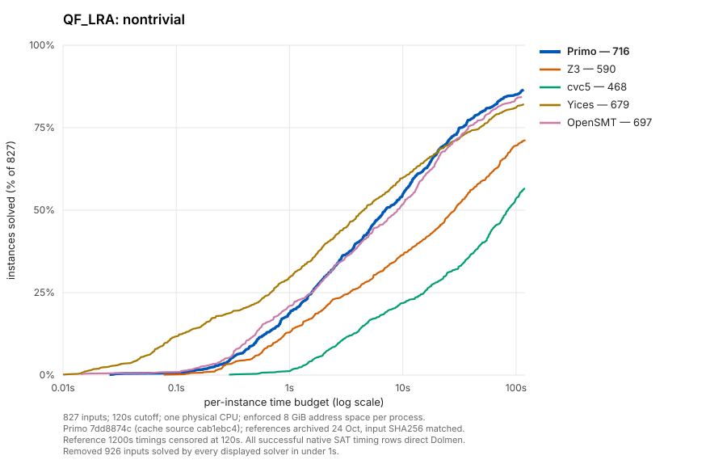
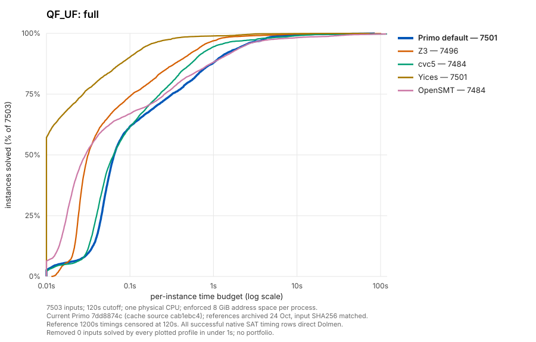
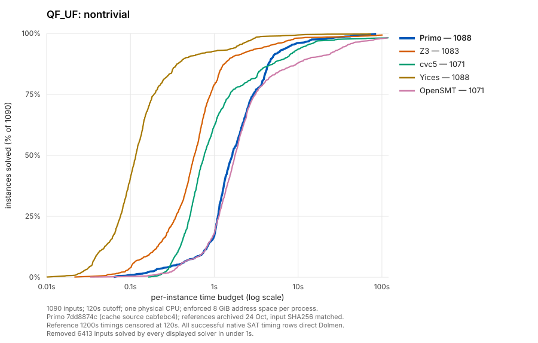
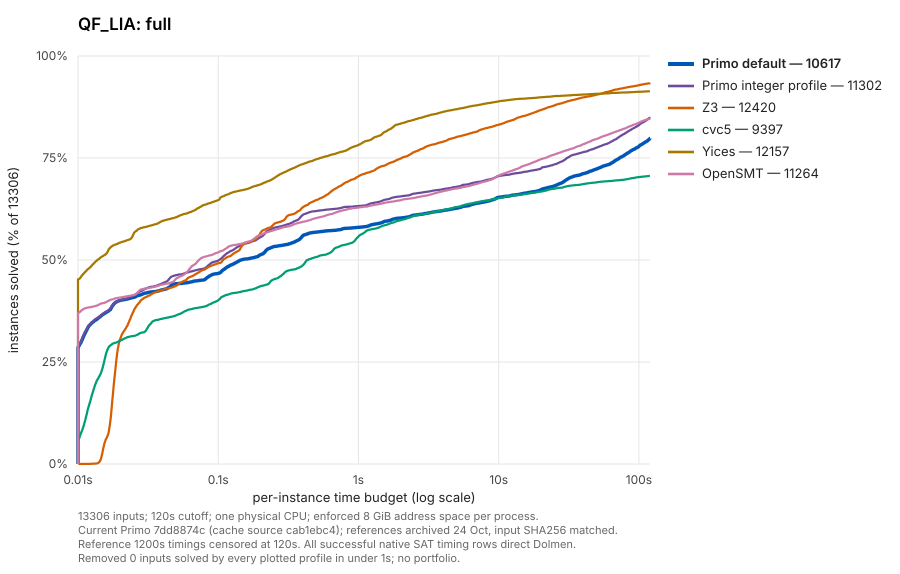
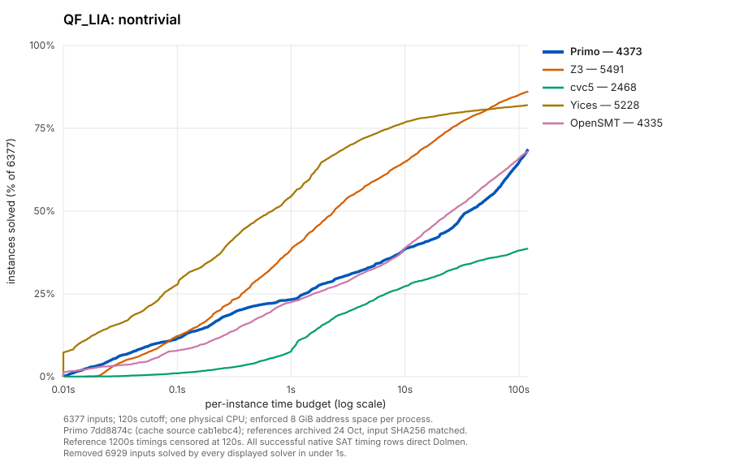
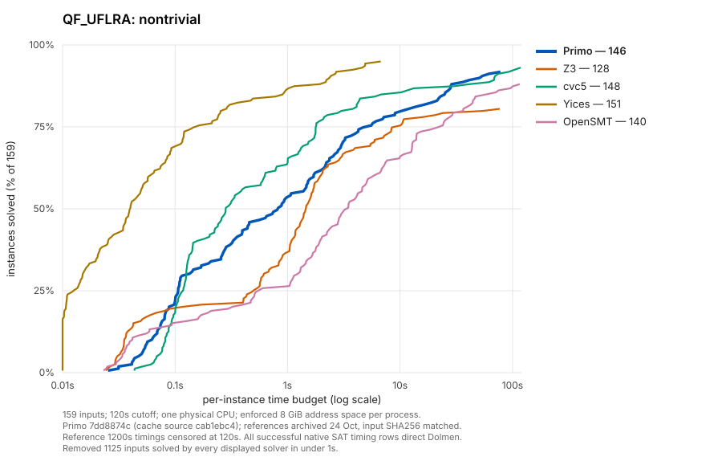
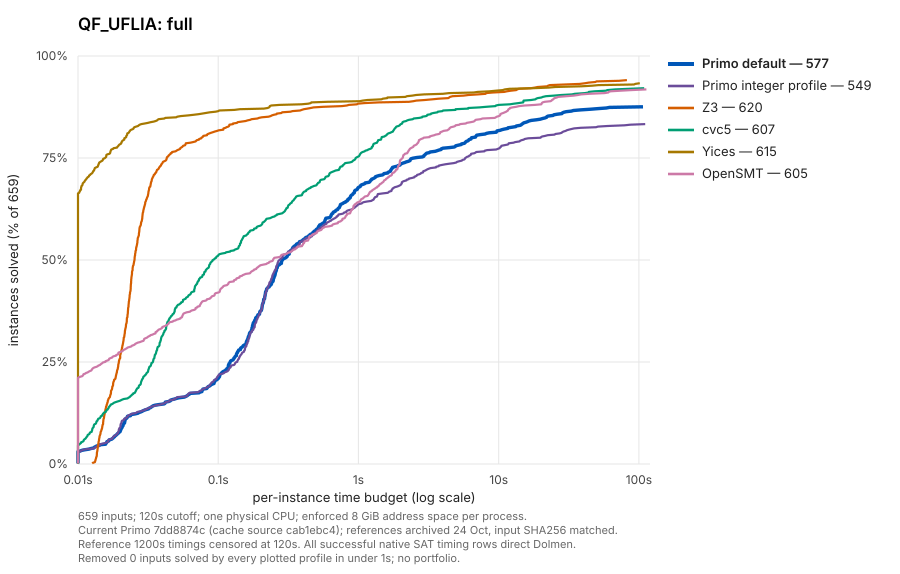

QF_LRA


| Solver | Solved | PAR2 sum |
|---|---|---|
| Primo | 1642 | 37040.02 |
| Z3 | 1516 | 70673.12 |
| cvc5 | 1394 | 102107.01 |
| Yices | 1605 | 43599.67 |
| OpenSMT | 1623 | 41173.02 |
Blue: Primo. One measured configuration per theory, chosen by full-corpus solved count, then PAR2. Shared colours, log time axis and 0–100% solved axis. Filtered views remove inputs every displayed solver finishes in under one second. Reference timings are reused; no new solver runs.


| Solver | Solved | PAR2 sum |
|---|---|---|
| Primo | 7501 | 4866.8 |
| Z3 | 7496 | 3670.64 |
| cvc5 | 7484 | 7886.63 |
| Yices | 7501 | 1054.4 |
| OpenSMT | 7484 | 11141.92 |

| Solver | Solved | PAR2 sum |
|---|---|---|
| Primo | 1642 | 37040.02 |
| Z3 | 1516 | 70673.12 |
| cvc5 | 1394 | 102107.01 |
| Yices | 1605 | 43599.67 |
| OpenSMT | 1623 | 41173.02 |


| Solver | Solved | PAR2 sum |
|---|---|---|
| Primo | 11302 | 593372.51 |
| Z3 | 12420 | 271334.95 |
| cvc5 | 9397 | 973085.16 |
| Yices | 12157 | 293140.97 |
| OpenSMT | 11264 | 578159.47 |


| Solver | Solved | PAR2 sum |
|---|---|---|
| Primo | 1271 | 3969.97 |
| Z3 | 1253 | 7946.21 |
| cvc5 | 1273 | 3587.96 |
| Yices | 1276 | 1997.56 |
| OpenSMT | 1265 | 6096.07 |


| Solver | Solved | PAR2 sum |
|---|---|---|
| Primo | 577 | 21102.74 |
| Z3 | 620 | 10072.68 |
| cvc5 | 607 | 13671.17 |
| Yices | 615 | 11155.95 |
| OpenSMT | 605 | 14629.97 |